Belastungsverteilung
Hier werden Auswertungen von jahresbezogenen, flächendeckenden Rasterdaten zur Luftbelastung und Verteilung der Wohnbevölkerung im Kanton Zürich sowie zu atmosphärischen Stickstoffenträgen in empfindliche Ökosysteme dargestellt. Die Grundlagendaten stammen aus Erhebungen (Bundesamt für Statistik BFS) und Modellrechnungen (Bundesamt für Umwelt BAFU). Die Modellergbnisse zur Luftschadstoffbelastung und den atmosphärischen Stickstoffeinträgen sind an Messwerten “kalibriert”, um eine ausreichend gute Genauigkeit zu erreichen.
Stickstoffdioxid


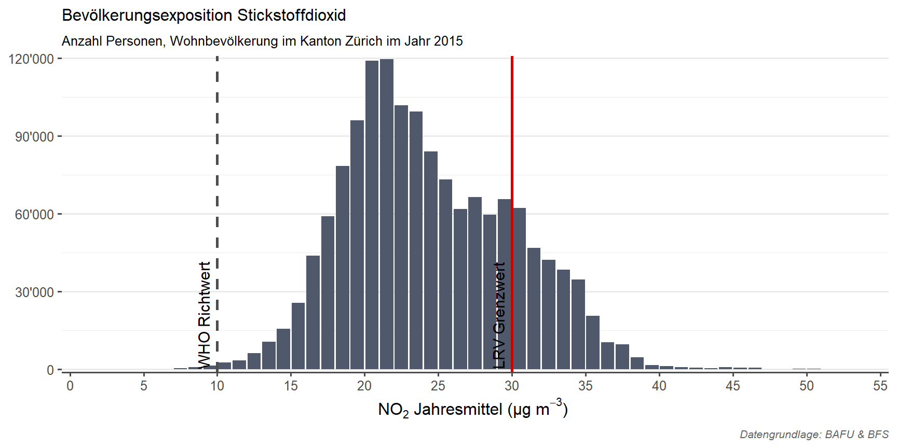
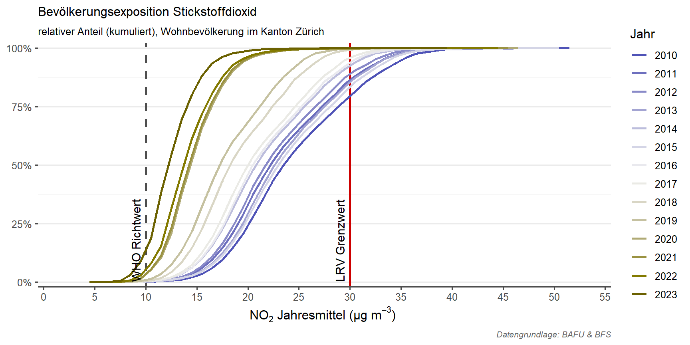


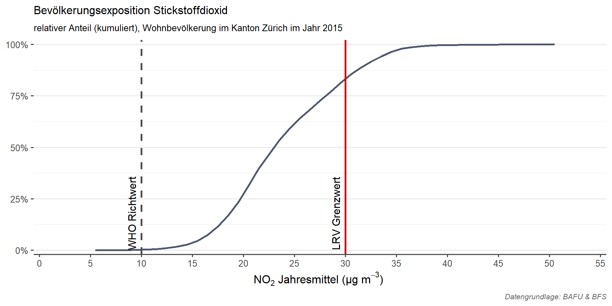


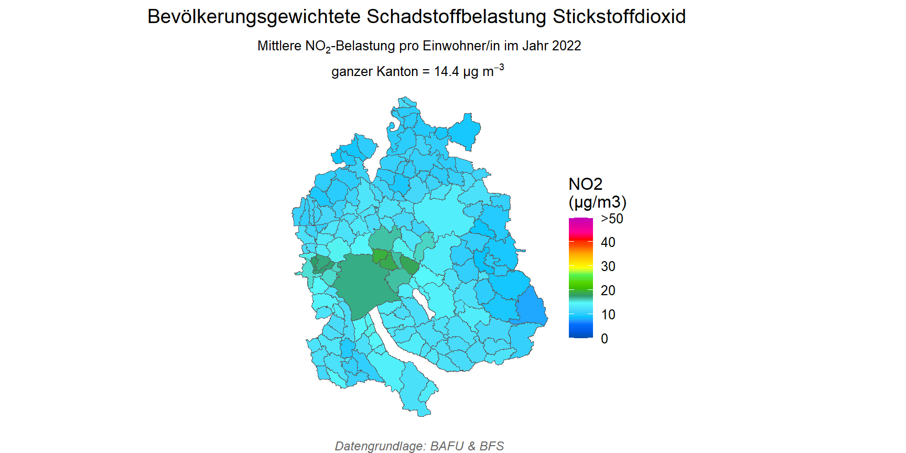


Feinstaub PM2.5
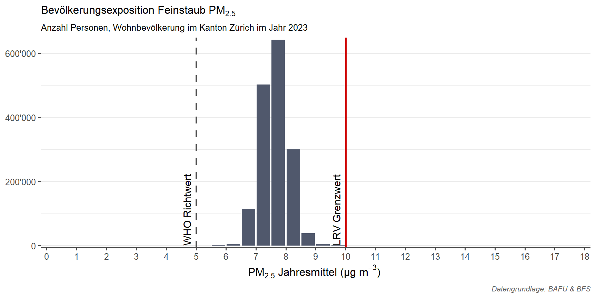


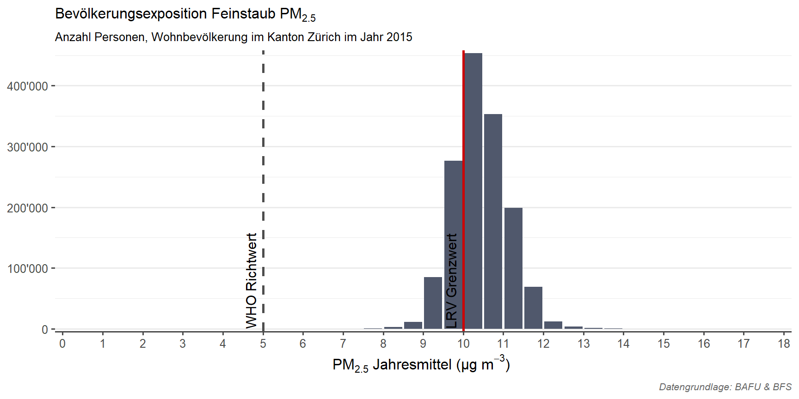


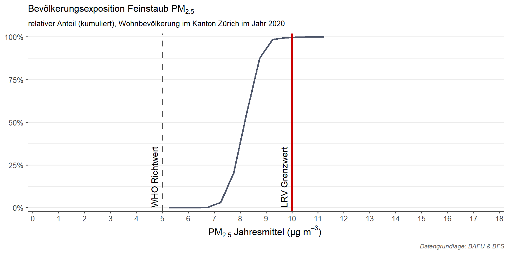

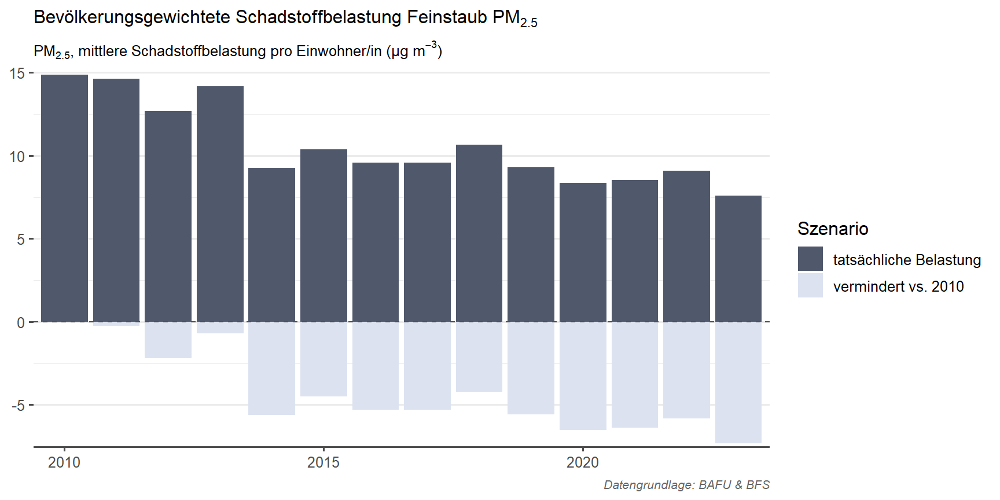


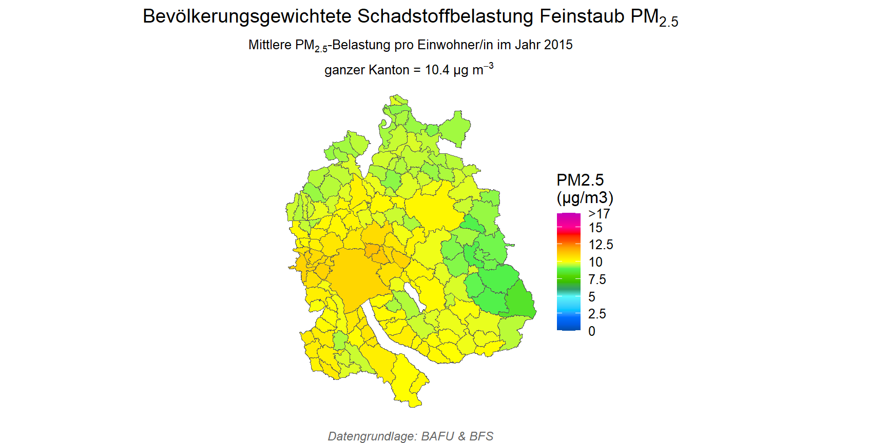
Feinstaub PM10
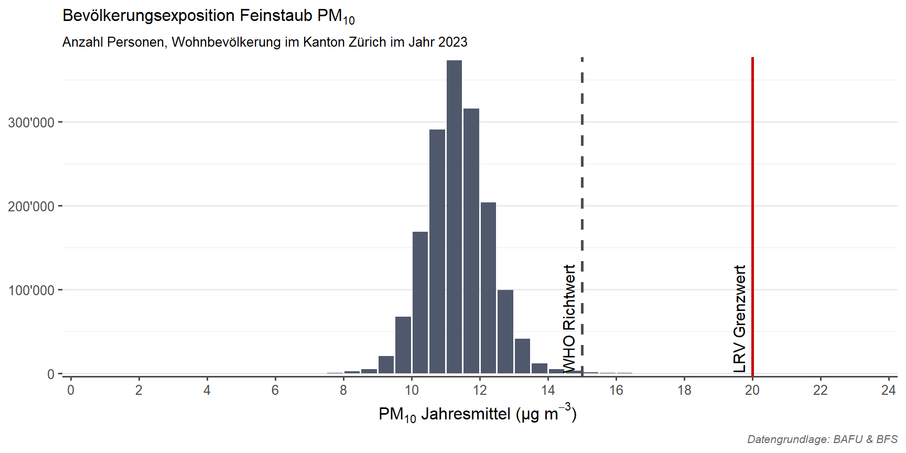


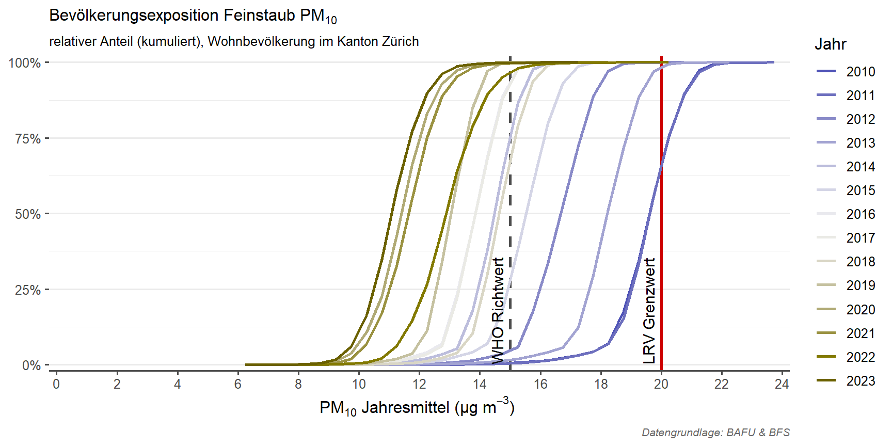


Ozon
Höchstes monatliches 98%-Perzentil
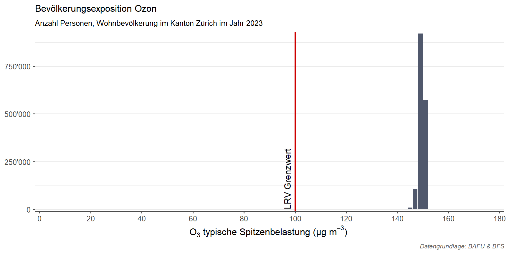
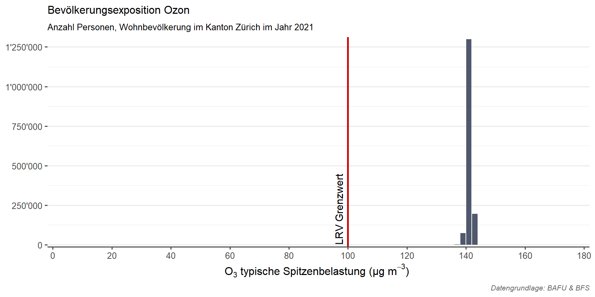
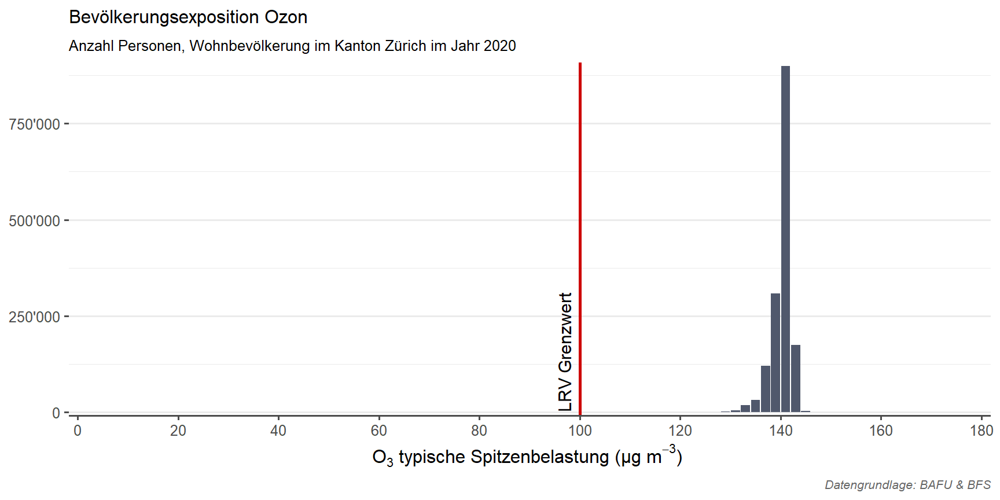
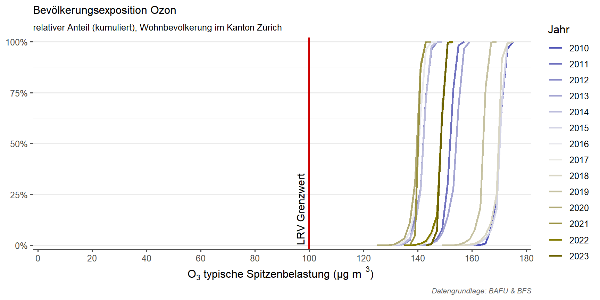


mittlere tägliche max. 8h-Belastung in der Sommersaison
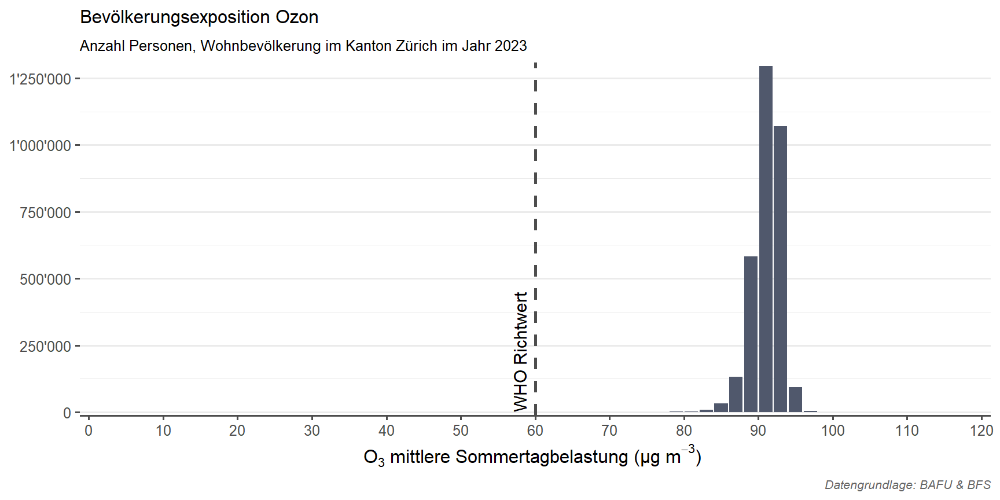


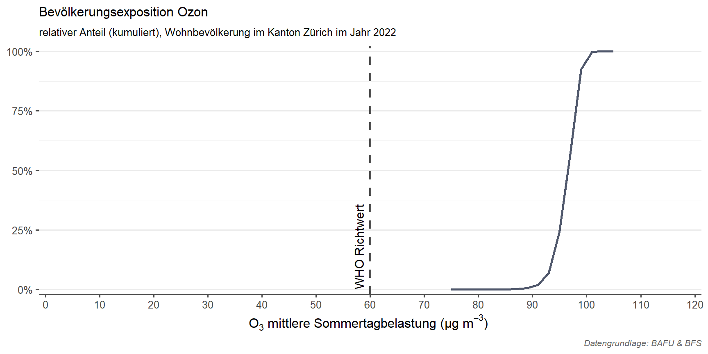

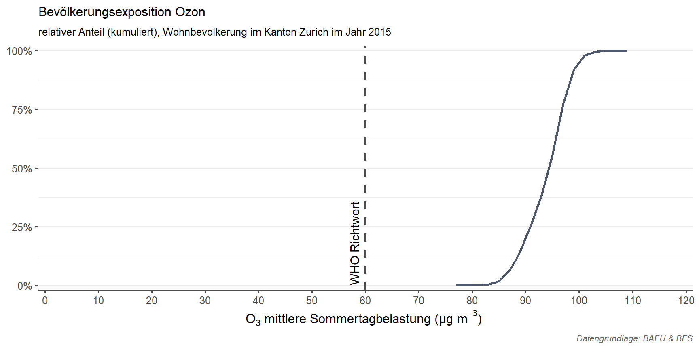
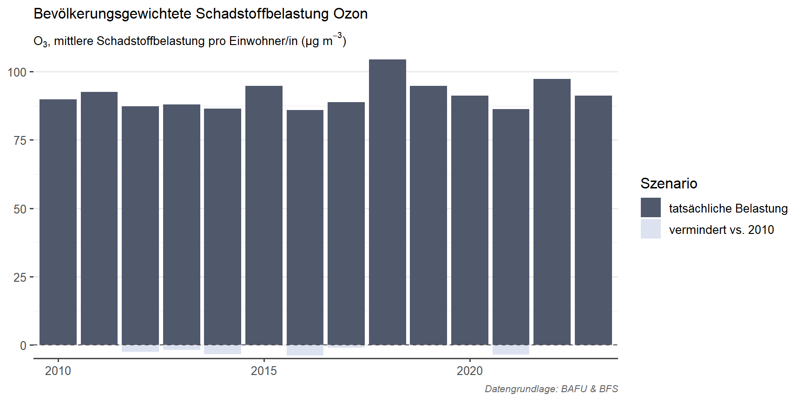

Stickstoffeintrag in empfindliche Ökosysteme